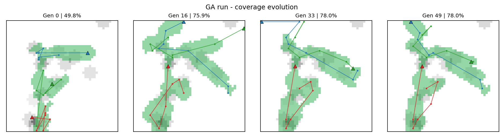

UAV Strategy Engine:
Genetic Algorithm for Disaster Surveillance
Tayyab Mehmood
Enrollment 03-134242-092
Department of Computer Science, Bahria University Lahore Campus
Artificial Intelligence · Assignment 2 · October 2026
Abstract
This assignment asks for a strategy engine that plans routes for three
drones over a 50 × 50 disaster grid. Each drone must start from a good
deployment cell, visit waypoints, choose a speed and a sensor power,
and avoid obstacles, no-fly zones and dangerous cells. We use a
genetic algorithm (GA) because it can search many possible plans and
balance several goals at the same time. A chromosome stores each
drone's deployment cell, every waypoint, its speed and its sensor
choice. A simulator flies the plan and scores it using high-priority
zone coverage, target detection, energy, flight time and hazard
exposure. We compare the GA with random search using the same number
of trials. Over three seeds, the GA scored 102.9 ± 6.6 on average,
while random search scored 78.4 ± 5.9. The GA covered 80.6% of the
priority zones and found 13.3 of 14 targets; random search covered
65.0% and found 11.3 targets. The tuned GA reached 84.4% coverage and
detected all targets. This report explains the design, tests the main
parameters, and shows coverage heatmaps across generations.
Figure 1 | (a) The best GA plan for seed 42. Triangles mark the
evolved deployment cells, stars mark targets, dark cells are
obstacles, and shaded cells show hazard. This run covered 78.0% of the
priority zones and detected 13 of 14 targets. (b) Best and average
fitness over 50 generations. The average rises as the population finds
more valid plans, while the best fitness improves quickly and then
levels off.
1. Introduction
After a disaster, a small drone team must inspect the affected area
quickly. Some cells are blocked, some are unsafe, and some target zones
are more important than others. The team also has limited battery and
flight time. A good plan must balance all of these goals, so there is no
single correct route.
This report presents a simple and reproducible strategy engine. Section
2 explains how a plan is represented and scored. Section 3 gives the
experiment setup. Section 4 compares the GA with random search and shows
how coverage changes across generations. Section 5 tests population
size, mutation rate and selection pressure. Section 6 discusses the
result and its limits.
2. System Design
2.1 Chromosome representation
One chromosome describes the whole fleet. It has two segments. The
deployment segment stores one starting cell for each of the three
drones. The route segment stores three blocks, one per drone, and each
block has six waypoints. A waypoint is a pair of whole-number grid
coordinates (x, y), a speed level (0 = slow, 1 = normal, 2 = fast) and a
sensor level (0 = off, 1 = medium, 2 = strong). The drone starts at its
deployment cell and visits the waypoints in order. The speed and sensor
values of a waypoint apply to the leg that leads to it. In total, one
chromosome stores 3 × 2 deployment values and 3 × 6 × 4 waypoint values
= 78 genes.
We chose this hybrid design for three reasons. First, grid coordinates
are easy to check and repair. Second, speed and sensor choices are
naturally discrete. Third, keeping the deployment cell and its route in
the same block lets crossover move a complete drone plan without
separating a route from the base that was evolved with it.
2.2 Fitness function
The score rewards coverage (C) and target detection (D),
and punishes energy (E), time (T) and risk (R).
Each term is scaled between 0 and 1, so the weights show their relative
importance:
score = 100C + 50D − 20E − 15T − 30R
− P(1)
C is the share of high-priority zone mass surveyed by the active
sensors. Every target owns a circular priority zone; covering the whole
zone contributes its full weight, so this is an area-coverage measure,
not just a count of visited target points. D is the share of the
14 targets detected. E is total energy divided by the fleet limit
(780), T is the longest drone flight time divided by the time
limit (120), and R is the average hazard level on the cells that
were flown over. P is a penalty for a plan that breaks a hard
constraint.
Coverage has the largest reward (+100) because surveying the important
zones is the main task. Detection is next (+50) so that the plan is also
rewarded for finding each target. Risk has the largest punishment (−30)
because flying through fire or radiation is dangerous. Energy (−20) and
time (−15) have smaller weights because the hard limits already reject
plans that run out of battery or exceed the range; these weights only
prefer safer margins among valid plans.
2.3 Genetic operators and constraints
Selection uses a tournament of three plans: pick three at random and
keep the best. Crossover takes two parents and swaps the last part of
their drone blocks, including each block's deployment cell and route,
so the structure stays valid. Mutation visits each waypoint with
probability 0.20 and then moves the waypoint, changes its speed, or
changes its sensor; each deployment cell is also relocated with
probability 0.05. The two best valid plans are copied to the next
generation unchanged. If the best score does not improve for four
generations, 10% random immigrants replace the worst plans. This keeps
the population diverse and helps avoid premature convergence.
A repair step runs before scoring. It pulls waypoints back inside the
grid, moves them out of obstacles and no-fly cells, and repairs a leg
that crosses a blocked cell. If repair cannot fix the plan, the penalty
P is added. The penalty is 1000 plus 50 for each violation and 25
for each unit of violation, so an invalid plan cannot beat a valid one.
The evaluator independently checks every leg and rejects a plan that
exceeds range or battery limits. The GA stops after 50 generations.
3. Experiment Setup
The simulation uses a 50 × 50 grid, 3 drones, 6 waypoints per drone and
14 targets. The GA uses 60 plans per generation for 50 generations,
which gives 3,000 evaluations with caching. Random search also receives
3,000 evaluations. Both methods use the same simulator and score
function. We repeat each method for seeds 42, 43 and 44 to reduce the
effect of luck.
Table 1 | GA and random search with the same budget. Values are
means over three seeds (42, 43 and 44). Higher score, coverage and
targets are better; lower energy, time and risk are better.
Method
Score
Coverage
Targets
Energy
Time
Risk
Genetic algorithm
102.9 ± 6.6
80.6%
13.3 / 14
372.9
72.4
0.225
Random search
78.4 ± 5.9
65.0%
11.3 / 14
348.9
79.5
0.272
Score is the fitness from Equation 1. Coverage is the share of priority
zone mass surveyed. Targets is the average number found out of 14. Risk
is the average hazard level (0–1). Energy is in normalised simulation
units.
4. Results and Comparison
Table 1 shows that the GA gives a much better mission plan. Its average
score is 102.9, which is 31% higher than the random-search score of
78.4. It covers 15.6 more percentage points of priority zones and finds
two more targets on average. It also needs less flight time (72.4 versus
79.5) and has lower risk (0.225 versus 0.272). Random search uses less
energy on average (348.9 versus 372.9), because it often takes short,
direct routes; the GA instead spends energy to reach more priority
zones. This is the expected trade-off in a multi-objective problem.
The GA won on every seed. Its three scores were 101.3, 110.1 and 97.2,
while random search scored 85.2, 73.9 and 76.3. The worst GA run was
still better than the best random run. The tuned run (population 200,
tournament 5, 10,000 evaluations) reached 109.4, covered 84.4% of the
priority zones and detected all 14 targets. The equal-budget result is
the fair comparison; the tuned result shows what more search can add.

Figure 2 | Coverage heatmaps across generations. Each panel
shows the best plan at that generation: the grey background is the
priority-zone map, green cells were surveyed by the active sensors,
and the lines are the evolved routes. Coverage rises from 49.8% at
generation 0 to 75.9% at generation 16 and 78.0% at generation 33,
then stays at 78.0% at generation 49. The deployment cells and routes
move as the GA learns where to start and where to fly.
5. Hyperparameter Sensitivity
We tested one parameter at a time with two seeds and 30 generations. The
results are shown in Figure 3. A population of 50 scored 101.5, a
population of 100 scored 104.5, and a population of 200 scored 105.1.
The largest population gave a small gain but needed about 2.3 times the
run time of 100, so 100 is the best practical balance.
For mutation, 0.10 scored 103.4, 0.20 scored 103.0 and 0.30 scored
102.4. The three values are close, which means the GA is not fragile:
moderate mutation is enough, while very large changes waste good plans.
For tournament size, 2 scored 101.6, 3 scored 103.0 and 5 scored 106.9.
Stronger selection pressure worked best here because the immigrant step
still protects diversity.
Figure 3 | Effect of population size, mutation rate and
tournament size on the best feasible score. Each point is the mean of
two seeds, and the bars show one standard deviation. Population size
has a clear effect; tournament size 5 gives the best mean score, and
the mutation values are close to each other.
6. Discussion
The final plan is not unique. Different seeds produced different
deployment cells and routes, and all of them were valid. This is
expected: many plans can visit the same zones in a different order, and
a different base can make the same route cheaper. The GA therefore
gives the team a set of good options, not one fixed answer. A human
planner could choose a plan that also avoids a school or a hospital,
even if another plan has a slightly higher score.
Random search is simpler, but most random plans are poor. The GA reuses
good parts of plans through selection and crossover, and the deployment
genes let it learn where the fleet should start. In this experiment, the
GA won on score, zone coverage, detection, flight time and risk. Random
search used less energy, which shows the trade-off clearly rather than
hiding it.
The main limitation is that the map is simulated. The drones do not face
wind, moving hazards or loss of communication, and the score weights are
a design choice. A real system should test more seeds, use live map data
and let a human check the final plan.
7. Conclusion
This project built a complete GA strategy engine for a three-drone
disaster mission. The chromosome stores deployment cells, waypoints,
speed and sensor choices; the score balances zone coverage, detection,
energy, time and risk; and repair keeps plans valid. The GA beat random
search with the same budget, and the best run found every target with
84.4% priority-zone coverage. The coverage heatmaps show how the plan
improves across generations, and the result is one of several good
routes, which is the right outcome for a problem with competing goals.
References
[1] Artificial Intelligence, Assignment 2 brief. Department of
Computer Science, Bahria University Lahore Campus, 2026.
[2] D. E. Goldberg,
Genetic Algorithms in Search, Optimization, and Machine Learning. Addison-Wesley, 1989.
[3] S. Russell and P. Norvig,
Artificial Intelligence: A Modern Approach, 4th ed. Pearson,
2021.
[4] T. Mehmood, “uav-strategy-engine,” GitHub repository, 2026.
https://github.com/ChTayyabMehmood/uav-strategy-engine